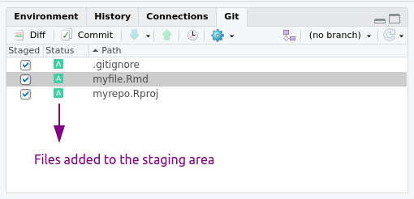

Getting the most of git
Why git?
Do you have something like this in your computer?
/home/pao/Documents/thesis
├── abstract.R
├── thesis.Rmd
├── thesis_reviwed.Rmd
├── thesis_reviwed2.Rmd
├── thesis_final.Rmd
├── thesis_finalfinal.Rmd
├── this_is_it.Rmd
├── now_this_is_it_for_real_this_time_i_swear.Rmd
└── FINAL.RmdProbably we all have, or had something like this at one point because we didn’t use a version control system. Version control systems manage the evolution and changes of a set of files that we’ll call repository. If you ever looked at the history of a Google Docs file, it is like that but in a very controlled way. Git is one popular version control system.
If you work alone, git is great to track changes and recover previous version of your files. You can also use a remote repository (more later) to have a back up and share your work.
If you work as a team you can take advantage of all the above and also use version control as a tool to collaborate and organize the various versions of the same file present in the multiple computers you and they use.
But what we mean by version control?
Let’s imagine that we have a repository already working (later we’ll see how to create one). When you create a new file as part of the repository (or repo), that file is untracked or unversioned. This means that the git will ignore the file and any change you made until you add it to the repo. At that point the file is staged and it ready to get into the repository. To do that you do a commit and save that version of the file to the repo. This workflow modify --> add --> commit will repeat every time you want to save a version of the file. We don’t recommend making a commit every time you save the file or change a comma, and its also not a good idea to make a commit with a billion of changes. With practice and depending on how do you work, you will find a comfortable middle ground.

So, we mentioned add and commit, these are git commands. If you have experience working with the command line you could use git from there, but the same commands can be executed from a GUI like GitHub Desktop or GitKraken. During this workshop we’ll use RStudio.
If you want to try the command line, here are the core git commands:
git add <file>to add a file to the staging area.git commit -m "A very descriptive message"to commit the files on the staging area.
Did I mentioned remote repository?
Yes, before we went through a local workflow. The repo lives in your computer and that’s it. But, you can also connect the local repository with a remote repository. For this workshop we are going to use GitHub to host remote repositories, but there are other options you can explore, such as GitLab.
Let’s imagine we have a local repository, we made some commits and we want to send those changes to the remote repository (we’ll see how to create the remote repository later). For that we push the commits to the remote repository and the two repos are “up to date”.
A team mate makes a change to a file and push it to the remote repository. Now, your local repo is “outdated” and you need to download those new commits from the remote repository. You pull the commits.

Tools like GitHub also include features that help you to collaborate and manage repositories. For example, you can modify files and commit those changes using the web interface.
If you want to try the command line, here are the git commands:
git pushto upload commits to the remote repository.git pullto download commits from the remote repository to the local repo.
Introduce yourself to Git
Before you create your first repository you need to make sure that git and RStudio are friends and that git knows you. If you follow the pre-workshop instructions, RStudio, git, and GitHub are definitely talking to each other.
You can check that RStudio “sees” git by going to Tools --> Global Options --> Git/SVN. There you should find the path in your computer to the git installation.
To introduce yourself to git, that is to let it know your name and email you can use the usethis package.
library(usethis)
use_git_config(user.name = "Jane Doe",
user.email = "jane@example.org")Substituting with your name and the email associated with your GitHub account.
You can do the same using the command line with
git config --global user.name 'Jane Doe'
git config --global user.email 'jane@example.com'You can also configure git from the command line:
git config --global user.name "Your Name"to configure your name, it can be anything but remember that it’s public.git config --global user.email youremail@example.comto add your email (the same you used for the GitHub account).
Creating a new repository
There are many ways to start a new repository, locally in your computer using the command line or an interface, from GitHub (or its friends), from RStudio! Here we’ll show you how to create a repo from GitHub, associate it to an RStudio project and work with it. But keep in mind that there are many other ways of working with git.
1. Create an online repository.
- Go to github.com and log in.
- On the top right corner, click on the “+” bottom and then “New repository”
Then:
- Repository template: No template.
- Repository name: myrepo or whatever you wish to name your new project.
- Description: Any short description of the project. Write this for humans.
- Public.
- Initialize this repository with: nothing (we can set up everything from R).
Before going back to RStudio, copy the url for the repository. For example https://github.com/paocorrales/myrepo.git
2. In RStudio, start a new Project:
File > New Project > Version Control > Git. In the “repository URL” paste the URL of your new GitHub repositoryhttps://github.com/paocorrales/myrepo.git.- Choose the folder where you want to create the project.
- Choose “Open in new session”.
- And Click on “Create Project”.
The new folder in your computer will be a git repository, linked to a remote GitHub repository and an RStudio Project at the same time. This workflow also makes sure that all the configuration between the local and remote repos are done correctly.
It also adds a .gitignore file that includes a list of files that we don’t need to track (i.e. .Rhistory).
Create a new repository from command line:
If you already have a repote repository:
git clone <repo url>
If you want to start a local repository from scratch in the folder you are located:
git init
Local changes
It’s time to put into practice some of the thing we’ve been talking.
Add, commit
- Create a new RMarkdown file and save it.
- Add it to the staging area and commit the file. You’ll need to add a descriptive message!
- Make a change on the file, it can be anything. Save it.
- Repeat step 2.



If everything went OK, you started tracking files, made changes, committed them to the local repository. You may see a message on the git tab saying that the local repo is ahead of the remote repo by 2 commits.
Push!
- Now, push the commits to the remote repository.
You won’t see any changes on GitHub until you push those commits. You can do this at the end of the day if you prefer but if you work with others it may be a good idea to push everything after you do each commit.
Remote changes
Let’s come back to GitHub. If you refresh the page, now you’ll see the files you committed just now. Let’s click on “Commits” to see the history of the repository. From this view, you can explore the repository at the “state” of each commit and look at the file differences.
Now, we can try to make changes here.
Create a README
- On the main page, click on the green bottom that says “Add a README”.
- Add something to the file. READMEs usually are written in Markdown and contain information about the repo.
- At the end of the page add a message on the first line and click on “Commit new file”.
- Come back to the main page to see the README.
The new file and the changes you do on GitHub are only on the remote repository until you make a pull from the local repo. If you make changes on the local repo while it not up to date, you may encounter merge conflicts, which lead to headaches. This happens when the version of a file on the local repo is not compatible with its version on the remote repo. In those cases, git cannot decide which version is the right one and you have to do it yourself.
To avoid this problem (most of the time), you should do a pull before start doing anything else. Most of the time RStudio will show the “Already up-to-date” but it is good to make this a habit.
Pull from GitHub
- Go back to RStudio.
- To the the Git pane.
- Click on the light blue arrow that says “Pull”.
- Check the README file on the Files tab.
Anatomy of GitHub Repo
Readme files. Use a
README.mdfile to explain what your project is, and how use it.README.mdis the file that is automatically displayed when you open a GitHub repo.License. The license tell people how they can use the content of your repo. Generally, we use permissive licences and people can do almost anything with the materials. Examples are the MIT Licence or Apache. Some extra resources:
- Choose an open source license does what it says on the tin and helps you choose a licence.
- Software Licenses in Plain English explains licences’ legalese in simple terms
Contributing guide. A file called
CONTRIBUTING.mdand guidelines for contributors so they know what they should do if they want to help you out.Code of Conduct. Good projects have codes of conduct to make sure that people are treated well. Github has an Code of Conduct wizard to make it easy to add one.
Issues. Allows you to manage the project.
Collaborating with others
When collaborating on a project you can find yourself in one of two scenarios
- You have write permission of the repo you are working on.
- You don’t have write permission on the repo.
The first situation is the most common when working together with an team on a long term project. You can clone the repo following the these same instructions and use the same workflow as before. When you try to push your changes to the remote repository, GitHub will check if you have the rights to modify the repo. The only difference between this and working on your own is that you need to communicate well so that two people are not working on the same thing. But this is true with or without git.
The second situation is common when contributing to strangers’ projects, such as fixing bugs in open source packages. In this case, you need to first fork the repository, which creates a remote repository linked to your GitHub account to which you will have complete access. Now you work in this fork using the normal workflow: modify, add, commit and push. But for your changes to integrate into the original repository, you need to create a pull request (or PR). This will let the owner of the original repo that you made some changes that you think should be merged. The owner can then accept, reject or ask for modifications. Once they accept your Pull Request, your modifications will be safe in the original repository.

Let’s plant some trees
As a fun example will collaborate with the recently open Flametree galley and do some pull request on the way.
Fork the repository
- Go to github.com/paocorrales/flametree_gallery
- Fork the repository using the “Fork” button on the top right corner.
Now, you have a copy of the repo in your GitHub account.
- Copy the url of the repo and clone it to your computer following the instructions to create a new repo.
Now you have an RStudio project (that is also a repo) that is a copy of the one in the original repo. It’s a very small project with a few file. template_script.R includes the necessary code to create beautiful images like this:

It uses the flametree library created by Danielle Navarro. How it works is not part of the topics of the workshop (sadly!) but it’s a good excuse to practice doing pull requests.
Make a change in the repo
Make a copy of the
template_script.Rfile and change it’s name to<your-name.R>Change the value of the first 3 variables in the script:
nameyour name.seedthere are some random things happening there.shadeschoose 4 colors that you like.
You can run the code if you want :)
- Save the file, add it to the staging area and commit it (include only the .R file you created).
- Push it to your remote repository.
At this point you’ve made a change in your local repo (that is a copy of the forked repo) and pushed those changes to your remote repo in GitHub. The original repo doesn’t know this.
If you want to contribute the changes you made to the original repo, it’s time to make a pull request.
Make a pull request
- Go to your repo in GitHub, you will see that you made the last commit and a message like this:
- Click on “Open pull request”.
- And click on “Create pull request”.
- We are almost there. Complete the pull request with a title and a message and then finish the PR.
And that it!
The owner/s of the repo will receive an email. They can review the pull request, comment on it and eventually accept the contribution. When that happen the changes you made will apear in the repo.
Resources
Happy git with R, by Jenny Bryan
Taller de git developed by Yanina Bellini Saibene and Marysol Gatti (in Spanish)